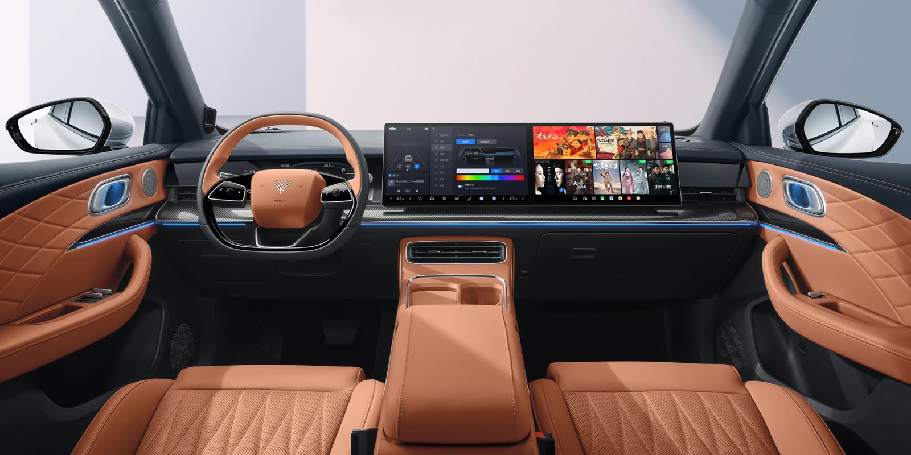
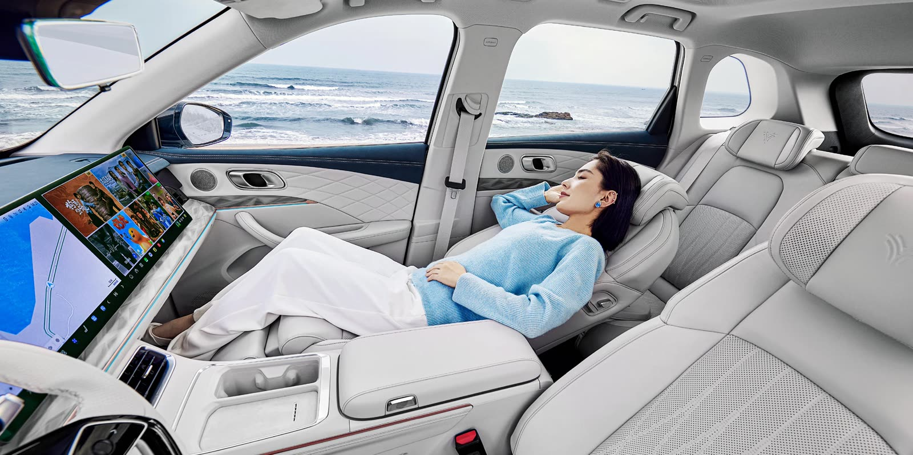
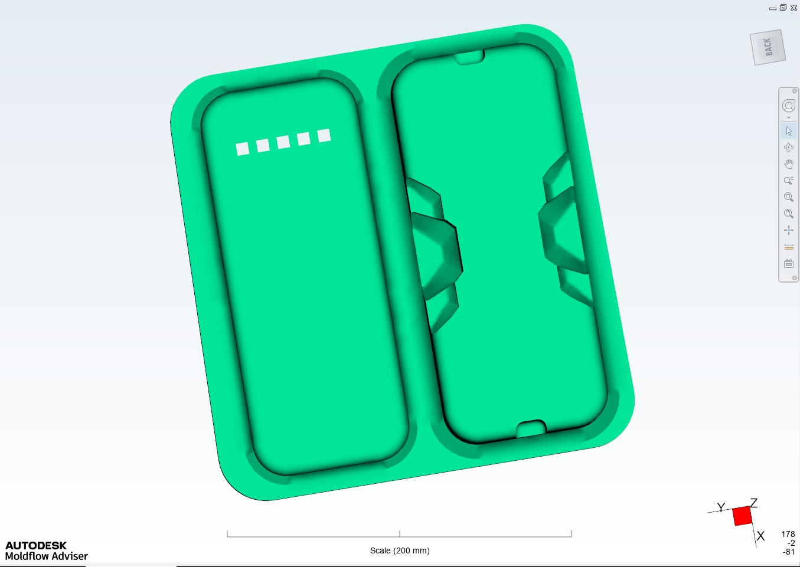
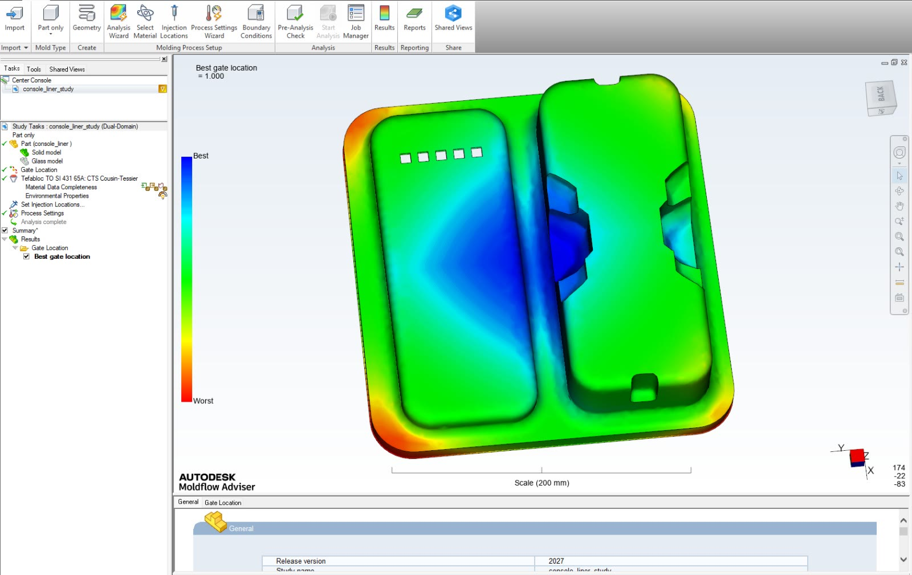
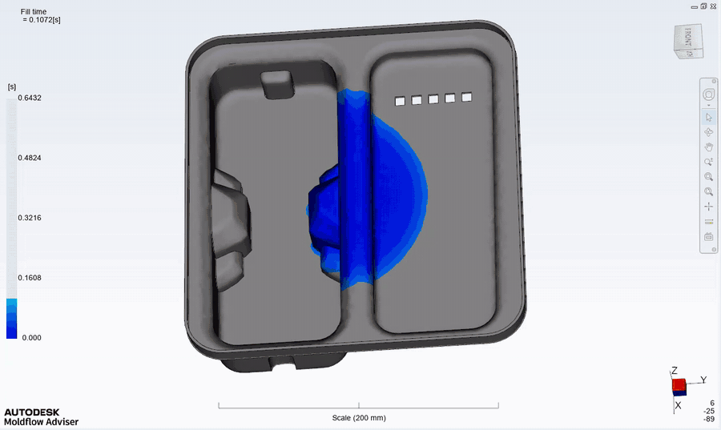
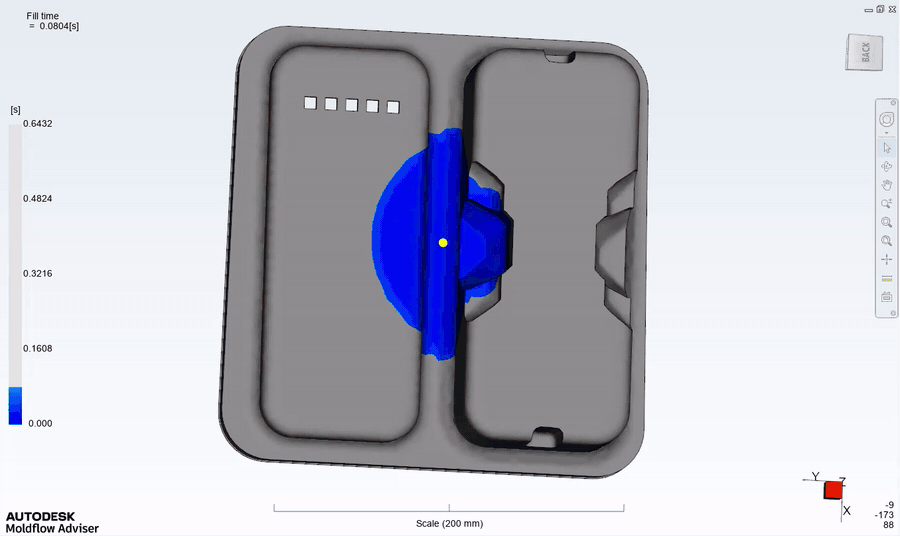
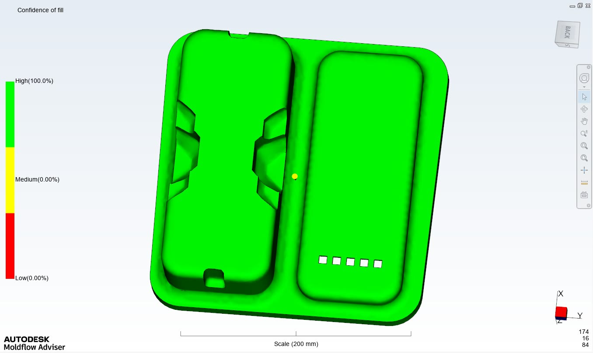
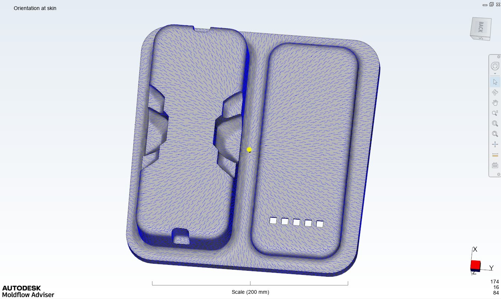

Interior Design Intern
Overview
At Neta Auto, I worked on interior components for production electric vehicles, with a focus on comfort, spatial ergonomics, and aesthetics. I developed concepts informed by user research and benchmarking, and communicated them to engineers and designers through presentation boards, mood boards, and material boards.
Beyond the visual design, I checked whether a part could actually be made. For a centre-console liner, I ran an injection-moulding study in Autodesk Moldflow to find the best gate position and confirm that the part would fill completely and evenly before tooling.
Key Contributions
- Developed interior components with a focus on comfort, spatial ergonomics, and aesthetics, informed by user research and benchmarking.
- Produced design presentations, mood boards, and material boards to communicate concept, colour, and finish.
- Ran a mould-flow study of a centre-console liner in Autodesk Moldflow Adviser: gate location, fill time, confidence of fill, and orientation at skin.
- Presented and refined design proposals with engineers and designers through prototyping and evaluation.
The Production Interior


Official product images © Neta Auto.
Case Study — Centre-Console Liner Mould-Flow Analysis
The liner is a soft insert that sits in the centre-console tray, divided into two pockets. Because it is a large, thin part with deep pockets and side clips, the gate position decides whether the melt reaches every corner. I set up the study in Autodesk Moldflow Adviser to check this before any tooling was made.





